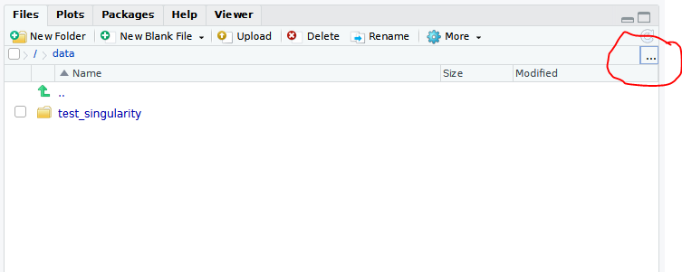

How to run cyCONDOR as container
Source:vignettes/How_to_run_cyCONDOR_as_container.Rmd
How_to_run_cyCONDOR_as_container.RmdThe easiest way to get started uning cyCONDOR is by
deploying the Docker container we provide with each release
of the package. This container is based on the Bioconductor
image and start an RStudio server session on your
localhost accessible from any browser.
In this vignette we will cover a few option to deploy our
Docker container in your computing infrastructure. If your
specific situation is not covered do not hesitate to contact us.
First we will show how to install Docker Desktop on any
Windows or Mac machine, we will then cover some basic set-up for the
configuration of Docker in a remote server.
Last we will show how to deploy our Docker container
using Singularity as for safety reasons many research
institutions are not allowing Docker containers in their IT
infrastructure anymore.
Run cyCONDOR with Docker Desktop (PC/Mac)
Install Docker or another tool to deploy Docker
containers (e.g., Singularity).
Note: depending on the operating system follow the instructions at https://www.docker.com/, on Windows also the Windows Subsystem for Linux needs to be installed:
-
Set up the Windows Subsystem for Linux 2 (
WSL2) and any of the available Linux distributions:- Install
WSL2first following the instructions reported here: https://learn.microsoft.com/en-us/windows/wsl/install - Install
Ubuntuor another Linux distribution as reported here: https://ubuntu.com/tutorials/install-ubuntu-on-wsl2-on-windows-10#1-overview
- Install
Download and install the latest version of
Docker Desktop.-
After starting the software, verify the installation of Docker Desktop.
- Open the
Ubuntuterminal. - Run:
- Open the
docker infoNote: If Docker is installed and running
correctly this will output some basic information on the system, if no
output is produced the installation was not successful.
Since the cause of this malfunction could be extremely diverse, it is
advisable to consult the troubleshooting section of
Docker desktop website (https://docs.docker.com/desktop/troubleshoot/overview/).
You can now start a Docker container for
cyCONDOR analysis.
First download the latest version of the Docker
image
docker pull lorenzobonaguro/cycondor:v030Now start the container with the following command (everything in
[] need to be edited by the user).
docker run -dp [YOUR PORT]:8787 ∖ # define the port to use
-e USER=[USER] -e PASSWORD=[PW] ∖ # username and password, can be defined by the user
--name cycondor_analysis ∖ # name of the container
-v [LOCAL DIRECTORY PATH]:/data/ ∖ # directory to mount
lorenzobonaguro/cycondor:030 #name of the docker imageYou can now access your RStudio session with any browser
at the address:
http://localhost:[YOUR PORT]Enter now the selected [USER] and [PW] and
you will have access to Rstudio.
To locate your data click on the ... symbol above the
Files tab (see picture below) and type /data
to finally press enter.
Exemplary Files windows of the Rstudio
server
Run cyCONDOR with Docker on a remote server
Please follow the guideline of your institution/organization on how
to access remote servers and how to manage Docker
containers.
Here we give a general introduction on how to ssh to a
remote server.
First log into the remote server by typing in the terminal:
ssh [ServerAddress] -l [username]Both Mac OS Terminal and Windows PowerShell
can use natively the ssh protocol.
You can now start cyCONDOR Docker container as
previously
docker run -dp [YOUR PORT]:8787 ∖ # define the port to use
-e USER=[USER] -e PASSWORD=[PW] ∖ # username and password
--name cycondor_analysis ∖ # name of the container
-v [LOCAL DIRECTORY PATH]:/data/ ∖ # directory to mount
lorenzobonaguro/cycondor:030 #name of the docker imageThe RServer session will now be available at the
following address:
http://[ServerAddress]:[YOURPORT]/Note: This vignette is not intended as an exhaustive
tutorial on how to use Docker, we encourage the reader to
explore Docker functionalists on https://www.docker.com.
Stop, restart and delete a Docker container
Once you are done with your work, either on your local machine or on
a remote server you can stop your Docker container.
Stopped container can be started quickly without loss of temporary data or permanently removed.
To stop your Docker container you first need to identify
the CONTAINER ID of your session, this can be done by
typing in the terminal
docker container lsThis command will generate a list of the running containers, you need
to copy the CONTAINER ID of the one matching with your
--name (e.g. cycondor_analysis)
The container can now be stopped
docker container stop [CONTAINER ID]To now restart the container simply run
docker contaienr start [CONTAINER ID]Or alternatively to permanently remove the container
docker container rm [CONTAINER ID]Note: Keep in mind that this operation will only remove the
container, the Docker image will still be available to your
system. If you want to remove also the docker image type
docker image rm [IMAGE NAME].
Run cyCONDOR with Singularity on a remote server
Running cyCONDOR Docker container with
Singularity as runtime is possible, first you need to
download cyCONDOR Docker image and convert it to a
.sif file:
singularity pull docker://lorenzobonaguro/cycondor:v030This command will save the Docker image in the current
working directory.
You can now generate a script to start the singularity container in
the same directory named for example
start_singularity.sh.
Also here everything in [] need to be edited by the
user.
#!/bin/bash
#create temporary file variable
export WORKSPACE=[folder path to store tmp files]
#create temporary folders
[ -d $WORKSPACE ] || mkdir -p $WORKSPACE
cd $WORKSPACE
mkdir run tmp-rstudio-server var-lib-rstudio-server
#create a database config file
printf 'provider=sqlite\ndirectory=/var/lib/rstudio-server\n' > database.conf
#create a secure cookie key file
cd tmp-rstudio-server
uuidgen > secure-cookie-key
#prepare to load the container
PASSWORD='[UserSelectedPassword]' singularity exec \
--bind $WORKSPACE/run:/run,\
$WORKSPACE/var-lib-rstudio-server:/var/lib/rstudio-server,\
$WORKSPACE/tmp-rstudio-server:/tmp/rstudio-server,\
$WORKSPACE/database.conf:/etc/rstudio/database.conf,\
[LOCAL DIRECTORY PATH]:/data/ \
[PathToCyCONDORSifFile] rserver \
--www-address=$(hostname -i) --www-port=[YourPort] \
--auth-none=0 --auth-pam-helper-path=pam-helper --server-data-dir=/var/run/rstudio-server --server-user=[YourUsername] &To start the container you need now to execute the sh
script
sh ./start_singularity.shSimilarly to Docker containers the RStudio session will
be available at the address:
http://[ServerAddress]:[YOURPORT]/Stop a Singularity container
To stop a Singularity container you first need to
identify the [PID] associated to the Rserver
session. You can easily do it by typing in the terminal
top -u [YourUsername]You can now stop the container by typing
kill [PID]Run cyCONDOR on a HPC cluster as SLURM Job
For really big dataset it is possible to run Singularity
containers as SLURM jobs on HPC computer clusters.
To set up your environment follow this detailed guide from the
Rocker project: https://rocker-project.org/use/singularity.html.
Note: Mare sure your institution allows interactive session
via SLURM, keep in mind this approach is reserving an
entire node do your work and might interfere with other users.